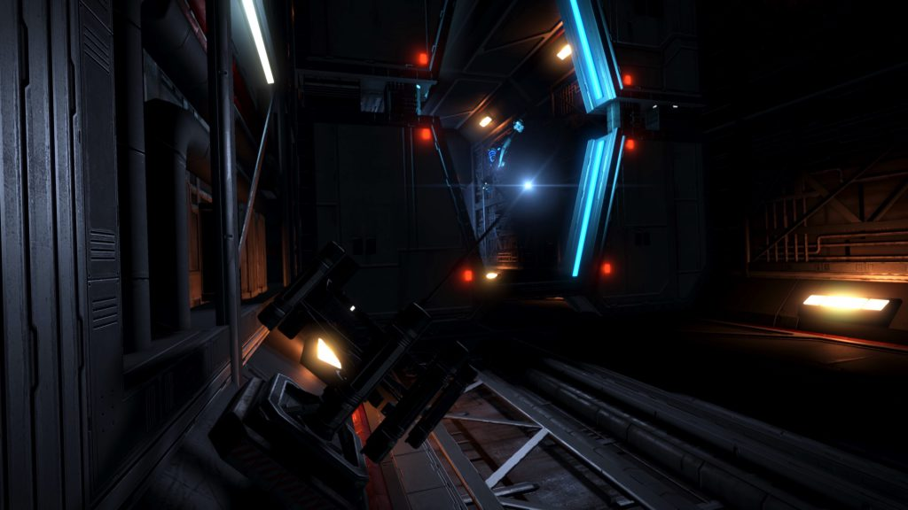

An installation may be found in the Celaeno system orbiting body 1, designated as a Relay Station, it was first discovered by Canonn’s Head of Archaeology & Technology Mykl Atrum.
Use extreme caution when visiting the facility as a large number of Elite ships with unusual designations such as SVI-075C are present, and will attack. Since the system is an anarchy, you will not become wanted for engaging them.
The location of this installation is revealed by the two nearby listening posts:
LISTENING POST SIGNAL DATA
…Unknown Subspace Signal JPK-050-A Detected…
Signal Match Detected in Pleiades Sector IH-V c2-16 system.
…Partial Decryption Achieved…Recon 2…and….high levels…interference detec…..Some signs of thermal activity….from undergro…..No life observed…SRV survey…repeat encountering interference…nothing serious…site clear
Recon…out.
…Message Corrupted…
LISTENING POST SIGNAL DATA
…Unknown Subspace Signal JPK-050-B Detected…
Signal Match Detected in HIP 17225 system.
…Recon 2 reporting in survey of site complete. M particles level holding within expected parameters.
Transmitting data back to PSJ -17 in Celaeno.
…Message Corrupted…

A series of four Ship Log Uplink points can be located on the exterior of the facility, and a further two inside tunnels within the interior of the facility. Deploy your ship’s hardpoints and use the onboard Data Link Scanner within 200m of each post to scan them and retrieve the logs. In addition to the text, each log is accompanied by an audio recording:
PSJ-17 COMMUNICATION LOG 1/6:
Command to Recon 6
Come in Recon 6! Please respond!
Sir, we’ve lost contact with one of our recon ships. Last known location HIP 17746.
Final transmission indicated an encounter of some kind. Recon 6 bugged out to rally point echo, but it looks like they didn’t make it.
There’s something else. We detected a signal that exceeds our language parameters; It was embedded in 6’s last transmission. It’s the same signal that we detected in Pleiades Sector AB-W B2-4
Awaiting your orders.
This log references Recon 6 that may be found in the HIP 17746 system, and the Listening Post in the Pleiades Sector AB-W b2-4 system that leads to the Distress Call and Unknown Structure in the HIP 14909 system.
PSJ-17 COMMUNICATION LOG 2/6:
Acknowledged Black Flight 12, mission is a go.
Target is Survey Vessel Victoria’s Song. Security systems adjusted for your cover. Apprehend if possible for questioning at Overlook, destroy if necessary.
Command out.
This log references the Survey Vessel Victoria’s Song that may be found in the HIP 17125 system.
PSJ-17 COMMUNICATION LOG 3/6:
Affirmative Recon 2 data received
:12 15 3 1 20 5 4:UKHKMWK RFDKLI RMUQCT: RYRSTJ BFN 19026:NILKTS 0 1 C:ILS JFKUR 17:IMKD JFKUR 152:NITLRT QTJTJOTQ UR:DTS SBT JTRRLDT MUS:
Head to Overlook and await further orders.
Applying a Keyed Caesar cipher with the key of LOCATED taken from the initial numeric sequence decoded by letter positions, to the remainder of the message, yields the message:
UNKNOWN SIGNAL SOURCE: SYSTEM HIP 19026:PLANET 0 1 C:LAT MINUS 17:LONG MINUS 152:PLEASE REMEMBER US:GET THE MESSAGE OUT:
This references the location of an inactive Unknown Structure on HIP 19026 B 1 c at -17,9575, -152.6994.
PSJ-17 COMMUNICATION LOG 4/6:
Command to Black Flight 22.
Regret to inform that survey ship Pandora suffered catastrophic systems failure. All hands lost. Please acknowledge.
Roger, Command, orders understood, no survivors. On intercept course.
22 out.
This log references the Survey Vessel Pandora that may be found in the HIP 21478 system.
PSJ-17 COMMUNICATION LOG 5/6:
Communication Officer’s Report.
Sir, we’ve been monitoring the frequencies provided in the data package and it looks like we’ve found one located in the Merope system.
The signal is slightly different from the others we’ve identified.
Should I send a recon flight out to investigate?
Awaiting orders.
It is most likely that this references the Listening Post in the Merope system that leads to the Distress Call and Unknown Structure in the HIP 14909 system.
PSJ-17 COMMUNICATION LOG 6/6:
Mission Authorization report.
A maintenance crew linked to our comms corp. has intercepted a foreign signal inside the civilian comms network they operate.
Primary objective is to shut down the Zeta 12 communication hub being used by the company to decode the signal and gather all associated data.
All signals to and from the station have been rerouted to our network so we can monitor their comms traffic. We’ll pose as a team from their head office. Cover is the shut-down of the facility, as part of an automation versus human workforce issue.
This is a code red clean up operation with zero tolerance for this data making it into the public eye. All steps are to be taken to ensure nothing makes it off that station.
This log references Communication Hub Zeta 12 that may be found in the Electra system.
Many of the messages reference the Megaship Overlook, which is believed to be in the permit locked HIP 22460 system.
The text in message 1 indicates there may be something encoded in message 3, and this does contain a Morse encoded secret message in the audio which was decoded by CMDRs Redden Alt-Mer and Nheirinius. The Morse and its decode is :
—… .—- —– / .—- ….- / ..— ..— / .—- / ….- / ….. / .—- —.. / .—- —-. —…
—… -.- .-.. -.. — .. –.- -… -.- .— / -.- ..- -.. — –. -.- -.- ..-. / .–. -… –.- — -.. .-.. —…
.-. -… .-.. / .—- —-. —– ..— -…. / .–. -… –.- -.. / -. / .—- / …- —…
–. .. –.- —…
–. -.- .— .-. —…
…. / .-.. .. — –.- -… …- –. -.. .–. / …. -… .— -… …. .. –. —…
…. -.- .- -.. / .–. –.- .. .— .- / -. -.– —…:10 14 22 1 4 5 18 19: -> JNVADERS -> INVADERS
:KLDOIQBKJ KUDOGKKF PBQODL:RBL 19026 PBQD N 1 V:GIQ:GKJR:H LIOQBVGDP HBJBHIG:HKAD PQIJA NY:
:OPERATION OVERLOOK SITREP:GIP 19026 SITE B 1 C:LAT:LONG:M PARTICLES MINIMAL:MODE STAND BY:
Note the mis-spelling of HIP as GIP